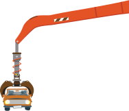

Ferrous Material
recyclers.
Baltimore, Maryland.
.01
Est. 1991.
We are one of the largest and most reputable scrap metal recyclers in the Mid-Atlantic Region. With integrity and financial strength, coupled with a steadfast commitment to our customers, BSC is recognized as a leader in the industry.
Known for competitive pricing, prompt service, and payment, we offer a wide range of services for the transportation and processing of scrap metal from our diverse suppliers. Our three locations are able to assist customers in MD, DC, DE, VA, and PA.
Headquartered in South Baltimore and conveniently located near major highways, rail terminals, and the Port of Baltimore, BSC has the flexibility to access both domestic and foreign markets. At BSC, we are honored to do our part in positively impacting the environment and supporting our customer base, while simultaneously creating and sustaining job growth for our dedicated workforce.
.02
Scrap Metal buyers and recyclers.
Baltimore Scrap Corporation is equipped with 2 Maryland State certified 70’ truck scales with large digital readouts. We purchase scrap metal from industry, government, auto salvage yards, demolition contractors, and farms, as well as the general public.
For the collection of our customer’s material we offer roll-off containers of various sizes, including:
- Roll-off containers from 20-50 cubic yards
- 90 cubic yard dump trailers
- Flat bed trailers
- Car trailers
We are capable of processing most ferrous material through the utilization of a Hammermill 98” Heavy Duty Auto Shredder, mobile shears, and torch cutting.
Please call 410-355-4455 or email us for current pricing and any questions concerning acceptable and unacceptable materials.
.03
Our Locations.
Baltimore Scrap Corp
3000 Vera StreetBaltimore, MD 21226
410-355-4455
Hours: Mon-Fri: 6:30am-3:30pm
Industrial Metal Recyling
9304 Darcy RoadUpper Marlboro, MD 20774
301-499-4129
Hours: Mon-Fri: 7:00am-4:00pm
North Point Recycling
2723 North Point BlvdDundalk, MD 21226
410-284-7000
Hours: Mon-Fri: 8:00am-4:30pm
.04
Contact baltimore scrap corp.
David Simon
President and Scrap Sales
Joseph Simon
Vice President / GM
Jim Burnett
Chief Financial Officer
Chuck Leimbach
Controller
Michael Lupco
Operations Manager
Colleen Darden
Office Manager
Jeff Ross
Buyer
Dana Cox
Weigh-master / Dispatcher
BSC is proud of its reputation as an active and consistent participant in various community outreach and youth initiative programs such as our long time sponsorship of the Baltimore/Curtis Bay Rec Center, Summer Camp for Children. Our involvement with both the South Baltimore Business Alliance and the Westphalia Sector Community Council reinforces our commitment to rigorous community participation.
Proud member of
Institute of Scrap Recycling IndustriesSouth Baltimore Business Alliance
© 2015 Baltimore Scrap Corp. Design by Chulado

-

- 